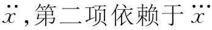
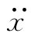
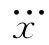

关于电磁质量的两个公式间的差异是特别令人为难的，因为我们已经小心地证明过电动力学理论与相对性原理是互相一致的。但相对论却毫无疑问地含有动量必定等于能量乘以v/c2 的意思。因此，我们就陷于某种困难之中，必然是犯了错误。虽然我们在计算中从未犯过代数方面的失误，但是可能遗漏了某种东西。
在推导有关能量和动量的方程时，我们假定过一些守恒律。也设想过把所有 的力都考虑进去，把任何由“非电”机制所做的功与所带的动量也都包括进去。现在如果有一个带电球体，且电力全都是斥力，则电子会趋于飞散状态。由于这个系统具有不稳定的力，所以我们可能在与能量和动量有关的规律中犯了各种类型的错误。为了得到一个协调一致 的图像，就必须想象有某种东西把电子结合在一起。那些电荷必须由某种橡胶带——某种不使电荷飞散的东西——束缚 在一个球体之内。最早曾由庞加莱指出，这些橡胶带或任何能把电子结合在一起的东西必须包括在能量和动量的计算之内。为此缘故，这一附加的非电性力才被赐以一个更优雅的名字：“庞加莱应力”。如果这些附加力也包括在计算之内，则用两种办法计算出来的质量也将有所改变（在某种意义上改变程度取决于一些详细假定），而结果就会与相对论一致。也就是说，从动量计算得来的质量与从能量计算得来的质量相同。然而，它们两者都各含有两种 贡献：电磁质量和来自庞加莱应力方面的贡献。只有当这两方面相加起来时才能获得协调一致的理论。
因此，不可能按照我们所希望的方式得出所有质量都是电磁性质量的结论。如果除了电动力学之外别无其他的话，那它就不是一个正规的理论。必须补充其他某种东西。不管你称作什么——“橡胶带”或是“庞加莱应力”还是其他什么——要构成这种协调一致的理论，在自然界中就必须存在其他的力。
很明显，当我们不得不把一些力放进电子内部时，整个概念的美妙之处就开始消失。事情变得十分复杂。你可能会问：那些应力有多强呢？电子怎样摇动呢？它到底会不会振动？它的内部特性如何？如此等等。也许有可能电子的确具有某些复杂的内部特性。假如按照这些方向创立一个电子理论，就可能预言一些像振动模式那样的奇特性质，而这些性质却从未明显地被观测到。我们所以说“明显地”，是因为已在自然界中观测到大量仍未能形成观念的东西。可能有朝一日会发现，今天我们所未能理解的东西之一（比如μ介子）实际上能够被解释为庞加莱应力的振动。这似乎不合理，但没有任何人能说得准。有许多关于基本粒子的事情我们还不了解。不管怎样，这一理论所包含的复杂结构是不受欢迎的，但企图用电磁学理论来解释全部质量的尝试——至少按我们所描述的那种办法——则已走进了死胡同。
我们愿意稍微多想一想，为什么当场里的动量与速度成正比时我们就说已有了质量。这很容易！质量就是在动量与速度之间的那个系数嘛。但我们也可按另一种方式来看待质量：如果为了加速一个粒子你得施力，那么它就具有质量。因此，如果我们稍微仔细地考察力是从哪里来的，则可能对我们的理解有所帮助。你怎么会知道必须有一个力呢？因为我们已证明了场的动量守恒定律。如果你有一个带电粒子并推动它经历一小段时间，那么在电磁场中将有一些动量。动量必定已被以某种方式注入场中。因此就必然会有某一个力推动电子而使其运动——一个除了需要克服机械惯性之外的附加力，即一个由于电磁相互作用引起的力。同时必然有一个反作用于“推动者”之上的相应的力。但究竟这个力是从哪里来的呢？
图景大抵就像是这样。我们可以把电子想象成一个带电球体，当它静止时，每一部分电荷都将与其他每一部分互相排斥，但力全部都成对地抵消掉，因而并没有任何净 力存在［见图28-3（a）］。不过，当电子正在加速时，由于事实上电磁影响从一点传播至另一点需要时间，所以那些力就不再平衡了。例如，在图28-3（b）中由β那一部分作用于α那一部分的力取决于在某一较早时刻的位置，如图中所示。力的大小和方向都取决于电荷的运动。如果电荷正在加速，则作用于电子各不同部分的力也许会如图28-3（c）所示的那样。当把所有这些力都加起来时，它们并不互相抵消。对于均匀速度来说它们就会抵消，尽管初看起来似乎甚至对于匀速运动这推迟作用也会给出一个非平衡力。但结果是，除非电子正在加速，否则就不存在净力。在加速的同时，如果我们考察电子的各部分之间的力，则作用与反作用不会严格相等，从而电子施于本身 一个力，该力试图阻碍其加速。它被自身所阻碍。
图28-3 由于推迟作用，所以作用于一个加速电子上的自力不会等于零（dF指作用于面元da上的力；d2 F则指由在面元daβ 上的电荷作用于面元daα 上的力）
要算出这个自作用力是可能的，但不那么容易，可是在这里我们还不打算从事这种复杂的计算。我们将告诉你们关于一个相对不那么复杂的一维——比方说沿x方向——运动的那种特殊情况的结果。这时，自作用力就可以写成一个级数。级数的首项依赖于加速度 ，等等 [1] 。结果得出
式中α和γ都是数量级为1的数字系数。 项的系数α取决于所假定的电荷分布，如果电荷均匀分布于一个球面上，则α=2/3。因此就有一项正比于加速度，它与电子的半径a成反比，而与我们在式（28.4）中所获得的关于m电磁 的数值完全相同。如果所选的电荷分布不同，因而α改变，则式（28.4）中的分数2/3也会按相同的方式改变。含 项与所假定的半径a无关 ，因而也与所假定的电荷分布无关，它的系数始终 等于2/3。再下一项与半径a成正比，而其系数γ则取决于电荷的分布情况。你会注意到，如果我们让电子半径a趋于零，则末项（以及一切更高次项）将趋于零；第二项保持不变；但那首项——电磁质量——趋于无限大。而且，我们能够看到，这无限大是由于电子的一部分作用于另一部分上的力引起的——由于我们承认了“点”电子可能会作用于其自身这件也许是蠢事所引起的。